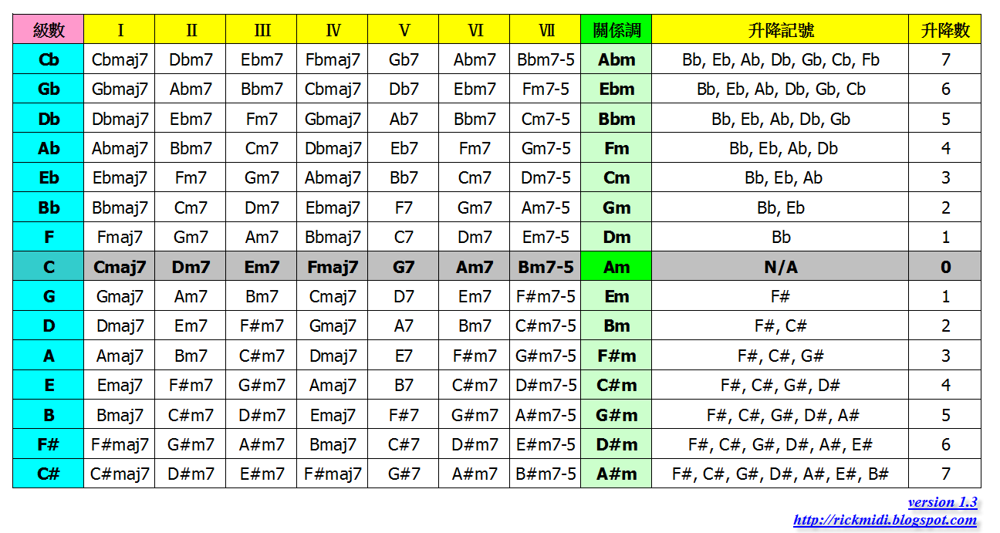

五度圈順階和弦表
用五度圈作為主軸，整理各調的順階和弦表。
下表是我個人學習、記憶、理解各調順階和弦的方式。與一般書籍表格的不同，我是以 五度圈 的排列來整理，並非以 C D E F .. 順階大調來排列。主要是可以更清楚五度圈如何實際應用在記憶各調的各級順階和弦。所以參考此表格時，請配合五度圈使用。

表格中，只要是由上網下的關係都是五度，例如 縱向的 III 級 Fm7 -> Cm7 => I -> V of Fm；而由下往上都是四度關係。另外右邊的升降記號也可以發現，升降記號的次序也是跟五度圈有關係，同樣可以藉由五度圈的排列次序來協助記憶有那些升降記號。
表中大調視覺上共有十五個，有些是重複的，像是 C# 和 Db 調單純的聽覺上是一樣的，但是分析依照不同的角度 (從 C 跟從 D 的角度) 會是升與降的差異，一般來說升 Key 的歌曲 (先聽到 C 大調再聽到 C# 大調) 就是有往上的感覺，也就是明朗、前進的感覺；而降 Key 的歌曲 (先聽到 D 大調，再聽到 Db 大調) 則反之。所以雖然他們使用的音群是一樣的，但是使用角度卻是不同的。
這道理跟閱讀語言的句子要看前後文才知道意思是同樣的道理的。
上面說視覺上大調有 15 個調，但是實際上是有 21 個，也就是沒有升記號的七個，跟升和降記號的各七個，所以共有 21 個調。但實際上寫譜的時候，如果 D# 大調來說，會有 9 個升記號，其中包含幾個重升記號 (x)，譜看起來會很壯觀，但是卻不實用，意義也不大。所以 D# 我們習慣會用 Eb 來記譜，那麼就只會有三個降音記號，讀起來才不會太辛苦。
所以純粹是寫譜便利性的考量。但是流行歌曲很多時候副歌會升半音，這時候就自行判斷 (鍵盤手) 該用哪個角度來看比較適合。關於升降記號的概念詳細請參閱 “升降記號” 的介紹
延伸閱讀
站內資料
- 和弦基礎
- 和弦學習地圖
- 五度圈
- 升降記號
更新紀錄
- 原文位址：https://rickmidi.blogspot.com/2008/12/blog-post_28.html
- 2008/12/28: 初版
- 2010/10/18: 更新 Cb 調三級的錯誤, 感謝網友留言訂正.
- 2011/04/07: 更正 Ab, A# 大調的關係小調, 感謝網友留言訂正.
- 2021/10/31: 搬移新站
Last modified 2008/12/28